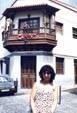
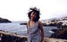
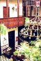

|
Tenerife
|
||||||||
| Tenerife | L'illa |
|
{kind=link}
|
El cotxe!! Imprescindible, a no ser que vulguis dependre de les 'excursions'. Sigui com sigui, cal veure molts llocs. Vàrem tenir sort: un Opel Corsa amb aire condicionat. En els quatre dies que vam tenir el vehicle vàrem coneixer l'estranya illa de Tenerife. No tota l'illa, clar, però sí llocs i fins i tot racons força bonics i interessants: Icod de los Vinos i el Drago Milenario; Garachico, encantador, amb les piscines de lava i aigua de mar; Masca, formacions impressionants; el Teide i el seu Parc; la Caldera, de boscos increibles; el Macizo de Anaga; el sud i els penyassegats Los Gigantes; i... San Andrés, amb Rambla i Cementiri :-) i la única platja de sorra daurada de tota la illa. Primer
vam visitar l'oest. |
Després, el centre de l'illa. San
Andrés. Teniem d'anar-hi, clar, i va ser
un encert: un poblet mariner, que s'enfila des de mar per un turó,
amb la seva Rambla
i el seu Cementiri
(gens potinejat i res de tanatori). I, a més a més, amb
l'única platja de sorra daurada de tota l'illa: Las
Teresitas. I la, potser, única platja nudista:
Las
Gaviotas. I, a sobre,
Rincón
de Pescadores; un restaurantet amb una mestressa
simpàtica, la
senyora Toñi, i unes mans per cuinar
i fer el 'bienmesabe', que deuen ser l'enveja dels 'chefs' de
tota l'illa. I bona companyia, ja que vàrem portar amb nosaltres
una parelleta molt jove, l'Àlex
i en Jordi, que estaven sense cotxe, avorrits, i que
es van apuntar al bany naturalista. Pel camí, el Macizo
de Anaga, tant impressionant com els altres i
on vam 'conèixer' els 'papazules' uns llangardaixos autòctons,
no massa grans, d'una voracitat i una velositat enormes. |
| . el primer dia |
Tenerife
|
|
|
 |

|

|
 |
 |

|
 |
|
 |
|
l'inici · el primer dia · l'illa · l'últim dia
 |
Feu-nos arribar relats de viatges i fotografies
(jpg - 100 px inch)
podeu deixar còpies en paper a FotoGestió, Rambla de l'Onze de Setembre, 35
webstap@sant-andreu.com
Tornar